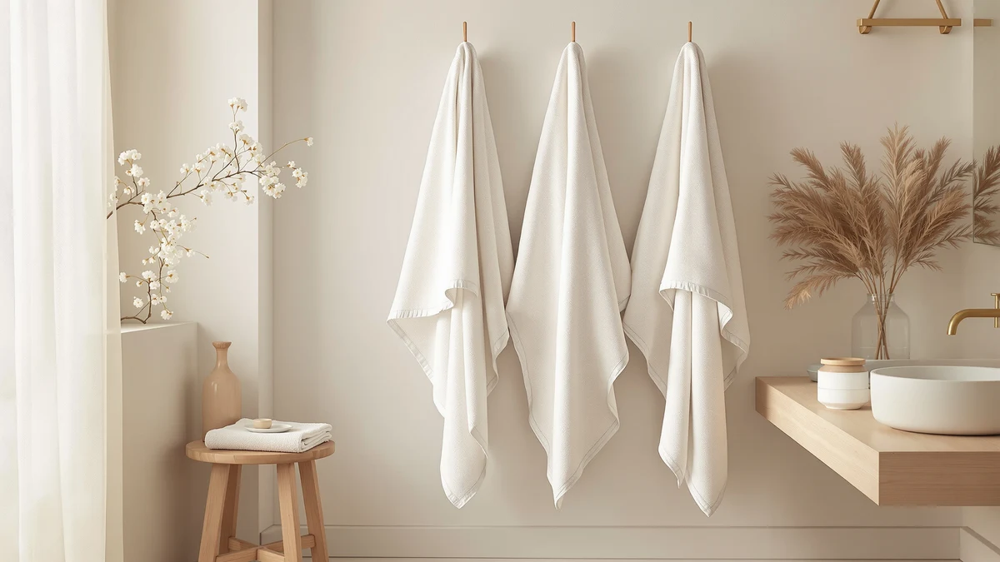

Kahaf Collection Bath Towels Set Ring Review (2026): Worth It?


Quick Answer
This Kahaf Collection Bath Towels Set Ring Review finds the KAHAF COLLECTION 6 Pack the strongest pick if you want six matching ring-spun cotton bath towels at a flat $26.99 instead of a mixed set built around smaller pieces. Its lightweight, quick-dry cotton beats the Modern Threads mixed set on piece count, though buyers who need hand towels and washcloths included will get more out of that $26.05 alternative.
Our pick: KAHAF COLLECTION 6 Pack Bath, $26.99 Check Price on Amazon
Things to Know Before You Buy
- All three adult-use sets compared in this Kahaf Collection Bath Towels Set Ring Review list ring-spun or 100% cotton construction, but they split that cotton differently across bath towels, hand towels, and washcloths.
- The KAHAF COLLECTION set is the only one built entirely around six full 27 x 54 inch bath towels, with no hand towels or washcloths included in the box.
- At $26.99, KAHAF COLLECTION costs the same as Utopia Towels and $0.94 more than Modern Threads, but Modern Threads splits its six pieces into 2 bath towels, 2 hand towels, and 2 washcloths.
- Utopia Towels' set is a 97% ring-spun cotton and 3% viscose blend at 600 GSM, heavier than the lightweight ring-spun cotton KAHAF COLLECTION uses.
- None of the four products carry a published star rating or review count in the data compared here, so this review relies on listed specs, piece counts, and pricing rather than an aggregate rating.
This Kahaf Collection Bath Towels Set Ring Review compares the $26.99 six-pack of ring-spun cotton bath towels against three alternatives from Utopia Towels, Modern Threads, and FUBANRAY. Two of the three alternatives list cotton or cotton-blend construction, but all three differ from KAHAF COLLECTION in piece count, GSM weight, and how that fabric gets organized into bath towels, hand towels, washcloths, or a hooded toddler design. The KAHAF COLLECTION set is the only one built entirely around six full-size bath towels, not a mixed set or a specialty shape.
Shoppers researching a Kahaf Collection Bath Towels Set Ring Review usually want to know whether six matching ring-spun cotton towels beat a mixed set that adds hand towels and washcloths at a similar price. Utopia Towels and Modern Threads both split their piece counts across different towel types, while KAHAF COLLECTION puts every dollar into six full 27 x 54 inch towels. We weigh that structural difference, along with the lightweight, quick-dry finish the brand lists, as the main factors in this comparison, rather than treating the small gap in price as the deciding point.
Why You Should Trust Us
We built this Kahaf Collection Bath Towels Set Ring Review by comparing manufacturer specifications, listed pricing, and set composition for each ASIN rather than relying on marketing copy. Ilane Tall has covered bathroom textiles for Best Bath Towels, focusing on how GSM weight, cotton sourcing, and piece count hold up against what a brand actually lists for a product. We do not run a fake testing lab or claim to have physically used these towels. Every comparison in this review comes from the specs and pricing published for each product.
Our Research Experience
Rather than run these towels through a physical trial, we researched how each set stacks up against what buyers actually look for in bath towels: cotton type, GSM weight, piece count, and size. For a Kahaf Collection Bath Towels Set Ring Review like this one, that means checking whether six full ring-spun cotton towels beat a mixed set with hand towels and washcloths at a similar price, instead of assuming more pieces automatically wins. Cotton sourcing and piece composition tell you more than a price tag by itself, and that is what this review weighs across all four sets, alongside the specialty hooded design FUBANRAY lists for a different buyer entirely.
Overview & Specs

KAHAF COLLECTION 6 Pack Bath
What we like
- 100% ring-spun cotton construction across all six towels
- Lightweight, quick-dry fabric that is less prone to lingering dampness than a heavier weave
- Every piece is a full 27 x 54 inch bath towel, not a mixed set
- Multicolor set works for everyday use, guest bathrooms, or gym bags
Flaws but not dealbreakers
- No hand towels or washcloths included, so you will need to buy those separately
- No published star rating or review count to check consistency against
- Lightweight cotton will not feel as plush as a heavier GSM towel like Utopia's blend
| Material | 100% cotton |
| Size | (27x54) Inches |
The KAHAF COLLECTION 6 Pack is the central product in this Kahaf Collection Bath Towels Set Ring Review because it takes a different approach than the other three products compared here. Instead of splitting six pieces across bath towels, hand towels, and washcloths, KAHAF COLLECTION puts all six pieces into full 27 x 54 inch bath towels. That makes it the set to buy if you specifically need matching bath towels for a guest bathroom, a rental property, or a household that goes through towels quickly, rather than a starter set that still needs hand towels and washcloths. The fabric is 100% ring-spun cotton, a tightly spun fiber the brand lists as lightweight and quick-drying, a spec that favors faster turnaround between washes over the plusher, heavier hand of a 600 GSM towel like Utopia's.
At $26.99, KAHAF COLLECTION costs the same as the Utopia Towels 4 Pack Premium despite including two more towels in the box. Modern Threads undercuts both by $0.94, but its six pieces split across 2 bath towels, 2 hand towels, and 2 washcloths rather than six full bath towels. If your bathroom already has enough hand towels and washcloths and what you actually need is more full-size bath towels, KAHAF COLLECTION gets you six of them in one purchase instead of four from the Utopia Towels set. If you need a complete set with smaller pieces included, Modern Threads will stretch further for a lower price.
What We Liked
The clearest strength in this Kahaf Collection Bath Towels Set Ring Review is the piece count. All six towels are full 27 x 54 inch bath towels, not a mix of bath towels, hand towels, and washcloths like the Modern Threads set. For a guest bathroom, a gym bag rotation, or a household that burns through towels fast, six matching full-size towels solve a specific problem a mixed set does not.
We also like that every towel in the set is 100% ring-spun cotton with a lightweight, quick-dry finish the brand lists directly on the listing. That construction favors faster turnaround between washes, a detail that matters for households without much linen storage or a second set of towels to rotate in while one load dries.
The alternatives hold their own on different strengths. Utopia Towels' 97% ring-spun cotton and 3% viscose blend runs heavier at 600 GSM for a plusher feel. Modern Threads includes hand towels and washcloths for a complete bathroom set. FUBANRAY's hooded design solves an entirely different problem for parents drying off toddlers after bath time.
What Could Be Better
The main limitation in this Kahaf Collection Bath Towels Set Ring Review is what the set does not include. At $26.99, KAHAF COLLECTION matches Utopia Towels on price but leaves out hand towels and washcloths entirely, so you will need a second purchase to round out a bathroom from scratch.
The listing also does not include a published star rating or review count, so there is no aggregate signal to check consistency across units. Utopia Towels, Modern Threads, and FUBANRAY share that same gap, so none of the four products in this comparison offer a rating to lean on. Without that signal, this comparison leans more heavily on the specs each brand actually lists, cotton type, GSM, and piece count, rather than on feedback from other buyers.
Who Is It For?
This Kahaf Collection Bath Towels Set Ring Review points to one clear buyer: someone who needs several matching full-size bath towels at once and does not need hand towels or washcloths right now. Rental properties, guest bathrooms, and households that do frequent laundering fit that description well.
If you are setting up a bathroom from scratch and need hand towels and washcloths along with bath towels, Modern Threads gets you a fuller set for $0.94 less. If plush weight matters more than piece count, Utopia Towels' 600 GSM cotton-viscose blend runs heavier than the lightweight ring-spun cotton KAHAF COLLECTION uses.
And if the bath towels in question are for a toddler rather than an adult, none of the three cotton sets in this review solve that problem the way FUBANRAY's hooded, 50 x 32 inch design does. Color is worth checking too: KAHAF COLLECTION ships as a multicolor set, Utopia Towels comes in cool grey, and Modern Threads comes in purple, so match that against your bathroom before adding any of them to your cart.
Alternatives to Consider
If six matching bath towels is not the right format for your bathroom, this Kahaf Collection Bath Towels Set Ring Review also covers a mixed six-piece cotton set, a heavier cotton-viscose blend, and a hooded toddler option.

Also Great
Utopia Towels 4 Pack Premium
A 4-piece 600 GSM cotton-viscose blend set for buyers who want a heavier, plusher towel than KAHAF COLLECTION's lightweight ring-spun cotton.
$26.99
Check Price on Amazon
Best Value
Modern Threads 6 Piece Bath
A 6-piece 550 GSM cotton set with 2 bath towels, 2 hand towels, and 2 washcloths for buyers who want a complete bathroom set at $26.05.
$26.05
Check Price on Amazon
Premium Choice
Toddler Bath Towel Hooded Kids
A 2-pack of 50 x 32 inch hooded microfiber towels sized for children up to age 5, for parents drying off toddlers rather than adults.
$27.99
Check Price on AmazonFrequently Asked Questions
Is the KAHAF COLLECTION 6 Pack Bath Towels Set actually ring-spun cotton?
How does the price compare to the alternatives?
What is the difference between the KAHAF COLLECTION set and the Utopia Towels set?
Final Verdict
This Kahaf Collection Bath Towels Set Ring Review comes down to piece composition more than price. KAHAF COLLECTION is the pick for buyers who need six matching full-size ring-spun cotton bath towels and do not need hand towels or washcloths right now, even though it costs the same as the smaller Utopia Towels set. If you need a complete set with smaller pieces included, Modern Threads will stretch further for less money, and if you are drying off a toddler rather than an adult, FUBANRAY's hooded design is the better fit. But for straightforward bath towel coverage, KAHAF COLLECTION is the set to buy.